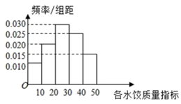
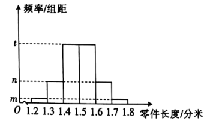

← 概率资料目录考点 38 · 正态分布和条件概率 · 讲解
资料来源：学科网一轮复习笔记 · 共 10 题
第 1 题
1．从1，2，3，4，5，6，7，8，9中不放回地依次取2个数，事件A为“第一次取到的是奇数”，B为“第二次取到的是3的整数倍”，则
（
）
A．
B．
C．
D．
查看答案与解析
【答案】B
【解析】由题意
事件
为“第一次取到的是奇数且第二次取到的是3的整数倍”：若第一次取到的为3或9，第二次有2种情况；若第一次取到的为1，5，7，第二次有3种情况，故共有
个事件
由条件概率的定义：
故选：B
第 2 题
2．将三枚骰子各掷一次，设事件 为“三个点数都不相同”，事件
为“三个点数都不相同”，事件 为“至少出现一个6点”，则概率
的值为（
）
为“至少出现一个6点”，则概率
的值为（
）
A．
B． C．
C． D．
D．
查看答案与解析
【答案】A
【解析】∵P（A|B）=P（AB）÷P（B），P（AB）=
=
P（B）=1-P（
）=1-
=1-
=
∴P（A/B）=P（AB）÷P（B）=
=
故选A．
第 3 题
3．已知某同学在高二期末考试中，A和B两道选择题同时答对的概率为 ，在A题答对的情况下，B题也答对的概率为
，则A题答对的概率为(
)
，在A题答对的情况下，B题也答对的概率为
，则A题答对的概率为(
)
A．
B．
C．
D．
查看答案与解析
【答案】B
【解析】设事件A：答对A题，事件B：答对B题，则
，
.
.故选：B.
第 4 题
4．已知随机事件 ，且
，
，
，则
______.
，且
，
，
，则
______.
查看答案与解析
【答案】
【解析】因为
，
，所以
，
所以
.故答案为：
.
第 5 题
1．已知
，且
，则
（
）
A．
B．
C．
D．
查看答案与解析
【答案】D
【解析】∵
，∴
，所以
．故选：D．
第 6 题
2．已知随机变量
服从正态分布
，且
，则
（
）
A．
B．
C．
D．
查看答案与解析
【答案】B
【解析】由题可知，
，
由于
，所以，
，
因此，
，故选:B.
第 7 题
3．“过大年，吃水饺”是我国不少地方过春节的一大习俗，2020年春节前夕，
市某质检部门随机抽取了100包某种品牌的速冻水饺，检测其某项质量指标．
（1）求所抽取的100包速冻水饺该项质量指标值的样本平均数 （同一组中的数据用该组区间的中点值作代表）；
（同一组中的数据用该组区间的中点值作代表）；
（2）①由直方图可以认为，速冻水饺的该项质量指标值
服从正态分布 ，利用该正态分布，求
落在
内的概率；
，利用该正态分布，求
落在
内的概率；
②将频率视为概率，若某人从某超市购买了4包这种品牌的速冻水饺，记这4包速冻水饺中这种质量指标值位于
内的包数为
，求
的分布列和数学期望及方差．
附：①计算得所抽查的这100包速冻水饺的质量指标的标准差为
；
②若
，则
，
．

查看答案与解析
【答案】（1）26.5；（2）①0.1359；②分布列见解析，数学期望为2，方差为1．
【解析】（1）根据频率分布直方图可得各组的频率为：
，
的频率为：
，
，
的频率为：
，
，
的频率为：
，
，
的频率为：
，
，
的频率为：
，
所以所抽取的100包速冻水饺该项质量指标值的样本平均数
为：
．
（2）①
服从正态分布
，且
，
，
落在
内的概率是0.1359．
②根据题意得每包速冻水饺的质量指标值位于
内的概率为
，
，
的可能取值分别为：0，1，2，3，4，
，
，
，
，
，
的分布列为：
， ，
．
，
．
第 8 题
4．某公司采购了一批零件，为了检测这批零件是否合格，从中随机抽测120个零件的长度（单位：分米），按数据分成
，
，
，
，
，
这6组，得到如图所示的频率分布直方图，其中长度大于或等于1.59分米的零件有20个，其长度分别为1.59，1.59，1.61，1.61，1.62，1.63，1.63，1.64，1.65，1.65，1.65，1.65，1.66，1.67，1.68，1.69，1.69，1.71，1.72，1.74，以这120个零件在各组的长度的频率估计整批零件在各组长度的概率.

（1）求这批零件的长度大于1.60分米的频率，并求频率分布直方图中
， ，
， 的值；
的值；
（2）若从这批零件中随机选取3个，记
为抽取的零件长度在
的个数，求
的分布列和数学期望；
（3）若变量
满足
且
，则称变量
满足近似于正态分布
的概率分布.如果这批零件的长度 （单位：分米）满足近似于正态分布
的概率分布，则认为这批零件是合格的将顺利被签收；否则，公司将拒绝签收.试问，该批零件能否被签收？
（单位：分米）满足近似于正态分布
的概率分布，则认为这批零件是合格的将顺利被签收；否则，公司将拒绝签收.试问，该批零件能否被签收？
查看答案与解析
【答案】（1）
，
，
；（2）分布列见解析，2.1；（3）能被该公司签收.
【解析】（1）由题意可知120件样本零件中长度大于1.60分米的共有18件，
则这批零件的长度大于1.60分米的频率为
，
记
为零件的长度，则
，
，
，
故
，
，
.
（2）由（1）可知从这批零件中随机选取1件，长度在
的概率
.
且随机变量
服从二项分布
，
则
，
，
，
故随机变量
的分布列为
|
0
|
1
|
2
|
3
|
|
0.027
|
0.189
|
0.441
|
0.343
|
（或
）.
（3）由题意可知
，
，
则
；
，
因为
，
，
所以这批零件的长度满足近似于正态分布
的概率分布.
应认为这批零件是合格的，将顺利被该公司签收.
第 9 题
5．某网购平台为帮助某贫困县脱贫致富，积极组织该县农民制作当地特产——腊排骨，并通过该网购平台销售，从而大大提升了该县农民的经济收入. 年年底，某单位从通过该网购平台销售腊排骨的农户中随机抽取了
年年底，某单位从通过该网购平台销售腊排骨的农户中随机抽取了 户，统计了他们
年因制作销售腊排骨所获纯利润（单位：万元）的情况，并分成以下五组：
户，统计了他们
年因制作销售腊排骨所获纯利润（单位：万元）的情况，并分成以下五组： 、
、
、
、 、
、 、
，统计结果如下表所示：
、
，统计结果如下表所示：
（1）据统计分析可以认为，该县农户在该网购平台上销售腊排骨所获纯利润
（单位：万元）近似地服从正态分布
，其中
近似为样本平均数 ，
， 近似为样本方差
.若该县有
近似为样本方差
.若该县有 万户农户在该网购平台上销售腊排骨，试估算所获纯利润
在区间
内的户数.（每区间数据用该区间的中间值表示）
万户农户在该网购平台上销售腊排骨，试估算所获纯利润
在区间
内的户数.（每区间数据用该区间的中间值表示）
（2）为答谢该县农户的积极参与，该网购平台针对参与调查的农户举行了抽奖活动，每人最多有 次抽奖机会，每次抽奖的中奖率均为
次抽奖机会，每次抽奖的中奖率均为 .每一次抽奖，若中奖，则可继续进行下一次抽奖，若未中奖，则活动结束，每次中奖的奖金都为
.每一次抽奖，若中奖，则可继续进行下一次抽奖，若未中奖，则活动结束，每次中奖的奖金都为 元.求参与调查的某农户所获奖金
的数学期望.
元.求参与调查的某农户所获奖金
的数学期望.
参考数据：若随机变量
服从正态分布
，则 ，
， .
.
查看答案与解析
【答案】（1） ；（2）
；（2） 元.
元.
【解析】（1）由题意知：
样本的平均数为 ，
，
所以 ，所以
，
，所以
，
而
 .
.
故
万户农户中，
落在区间
内的户数约为 ；
；
（2）设中奖次数为 ，则
的可能取值为
，则
的可能取值为 、
、
、
、
、
、 、
、 、
，
、
，
则
，
所以 .
.
令 ，①
，①
，②
由①
②得：
，
 ，
，
所以
（元）.
所以参与调查的某农户所获奖金
的数学期望为
元.
第 10 题
6．2020年，新冠状肺炎疫情牵动每一个中国人的心，危难时刻众志成城，共克时艰，为疫区助力．福建省漳州市东山县共101个海鲜商家及个人为缓解武汉物质压力，募捐价值百万的海鲜输送武汉．东山岛，别称陵岛，形似蝴蝶亦称蝶岛，隶属于福建省漳州市东山县，是福建省第二大岛，中国第七大岛，介于厦门市和广东省汕头之间，东南是著名的闽南渔场和粤东渔场交汇处，因地理位置发展海产品养殖业具有得天独厚的优势．根据养殖规模与以往的养殖经验，某海鲜商家的海产品每只质量（克）在正常环境下服从正态分布
．
（1）随机购买10只该商家的海产品，求至少买到一只质量小于265克该海产品的概率；
（2）2020年该商家考虑增加先进养殖技术投入，该商家欲预测先进养殖技术投入为49千元时的年收益增量．现用以往的先进养殖技术投入 （千元）与年收益增量
（千元）．
的数据绘制散点图，由散点图的样本点分布，可以认为样本点集中在曲线
的附近，且
，
，其中
．根据所给的统计量，求y关于x的回归方程，并预测先进养殖技术投入为49千元时的年收益增量．
（千元）与年收益增量
（千元）．
的数据绘制散点图，由散点图的样本点分布，可以认为样本点集中在曲线
的附近，且
，
，其中
．根据所给的统计量，求y关于x的回归方程，并预测先进养殖技术投入为49千元时的年收益增量．
附：若随机变量
，则
;
对于一组数据
，其回归线
的斜率和截距的最小二乘估计分别为
．
查看答案与解析
【答案】（1）0.0129．（2）
，年收益增量为576.6千元．
【解析】（1）由已知，单只海产品质量
，则
，
由正态分布的对称性可知，
，
设购买10只该商家海产品，其中质量小于265g的为X只，故
，
故
，
所以随机购买10只该商家的海产品，至少买到一只质量小于265克的概率为0.0129．
（2）由
，
有
，
且
，
所以y关于x的回归方程为
，
当
时，年销售量y的预报值
千元．
所以预测先进养殖技术投入为49千元时的年收益增量为576.6千元．